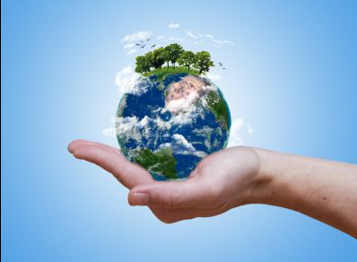
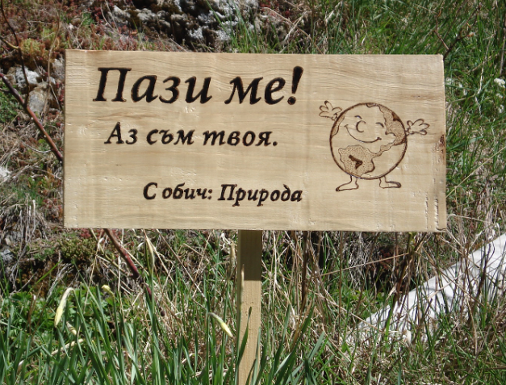
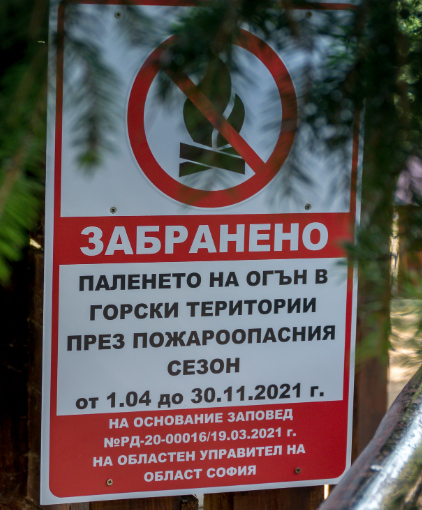
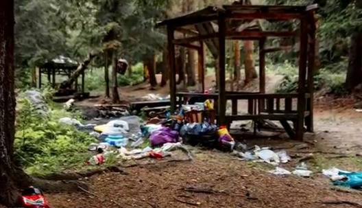

Да спасим България
Кои са актуалните заплахи за българската природа, за които хората трябва да знаят? Списъкът остава дълъг въпреки надеждите, че след протестите на Орлов мост нищо вече не е същото.
Пирин
През 2011 г. управляващите вкараха за разглеждане промени в Закона за горите, чиято единствена цел беше да се улесни изграждането на нова, по-голяма ски зона в Природен парк Витоша, която да се построи върху държавен горски фонд, без да се заплаща на държавата каквото и да било за използването на терена или изсичането на дърветата. Освен Витоша застрашени бяха и редица други планини и гори в България.
След поредица от протести, продължили повече от шест месеца, се стигна до блокиране за три вечери на Орлов мост веднага след приемането на поправките в закона. Накрая президентът наложи вето
Обект от списъка на световното природно наследство в листата на ЮНЕСКО, национален парк изключителна държавна собственост, зона от Натура 2000 по двете природозащитни директиви на Европейския съюз - няма международно признание за стойността на природата си, което Пирин да не е получил.
Въпреки това обаче в сърцето на парка беше изградена ски зона с редица закононарушения. Всички те бяха толерирани и ставаха все повече.
През 2011 г. Министерство на околната среда и водите най-сетне установи, че концесионерът на ски зоната използва почти наполовина повече от договореното. Но вече година и половина последствия за нарушителя няма.
Резултатите за хората обаче са унищожени вековни гори, застроени планински терени и по-малко приходи от държавна собственост. Стигна се до изключване на ски зоната от обекта на световно природно наследство на ЮНЕСКО поради „увреждане на стойността, за която е бил обявен”.
Също толкова лошо обаче е затвърждаването на усещането за безнаказаност сред обществото и кампанията от черен пиар срещу тези "еколози", които насочват общественото внимание към проблемите със ски зоната


Странджа
През пролетта на 2012 г. бяха премахнати повечето сгради от незаконния комплекс "Златна перла" в Природен парк Странджа, за който природозащитните организации алармираха още през 2006 г.
Но проблемът със застрояването на природния парк продължава да е на дневен ред. Министерството на регионалното развитие и благоустройството отказва да промени спрения в съда общ устройствен план на Община Царево, който предвижда мащабно застрояване на крайбрежието на природния парк от Царево до Резово.
От това се възползва Министерство на околната
среда и водите, което одобрява на парче нови вилни
селища в уж защитените територии на Природен парк
Странджа.
В същото време продължават неяснотите и притесненията
от строителството на голяма електроцентрала на турска
територия, недалеч от българската граница. През есента
на 2012 г. турски и български природозащитници
проведоха серия протести, като не допуснаха
инвеститорите
да проведат проформа обществено обсъждане на проекта.

